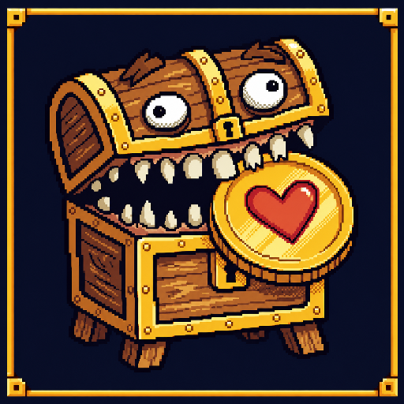
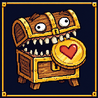

install-master
icon-512
SHA-256 4d40441a62d2c3ae15294d6e281a12638e780eb8dbca9a06b8ca8216591a0d56
Page Visual Optimization · Phase 1
Install / Favicon approved at the exact hashes below. One composition is resized unchanged across all five review sizes.

完整 Mimiku 與心形硬幣保留在 16、32、48、192、512px。小尺寸不移除物件、不改裁切，也不另行重畫。
install-master
SHA-256 4d40441a62d2c3ae15294d6e281a12638e780eb8dbca9a06b8ca8216591a0d56
install

SHA-256 c6390c23645fa642e1d3ba561c4506b2cae9606c12c08ffbaded47e7333e9988
optical-evidence
SHA-256 e72c115abe5f6d9b56d8b0ab4246899388007ad6ccff017623d9ae629dbbad43
favicon
SHA-256 a1aa2d33ae24fb27c68ca472c10a965b984d233e608740f7ac001621d4f216cf
favicon
SHA-256 3aeff4325d6240fcdaeca8fa9e9ba7d4dd13cf1395dd7f9f7d799271f1942b8f
Maskable approvedThe dedicated safe-zone composition is approved separately at its exact hashes.
Review-onlyAll files stay outside web/public; no runtime asset changes.
Gate remains openIcons family calibration is approved; Gate A remains open for the other asset families.